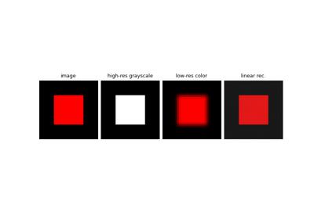

Decolorize
- class deepinv.physics.Decolorize(**kwargs)[source]
Bases:
DecomposablePhysicsConverts RGB images to grayscale.
Follows the rec601 convention.
Signals must be tensors with 3 colour (RGB) channels, i.e. [,3,,*] The measurements are grayscale images.
Examples using Decolorize:

Stacking and concatenating forward operators.
Stacking and concatenating forward operators.